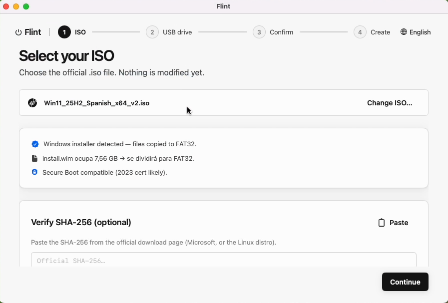
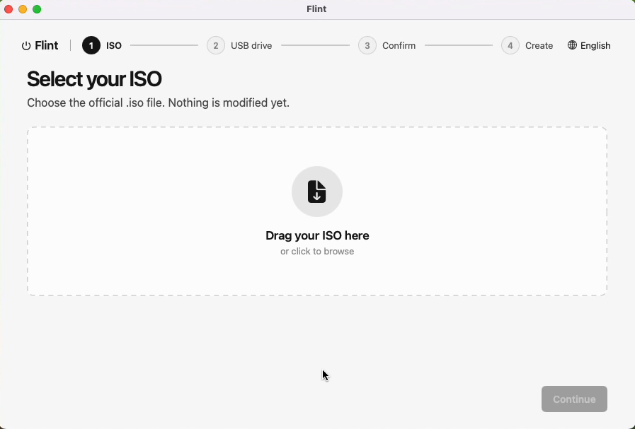
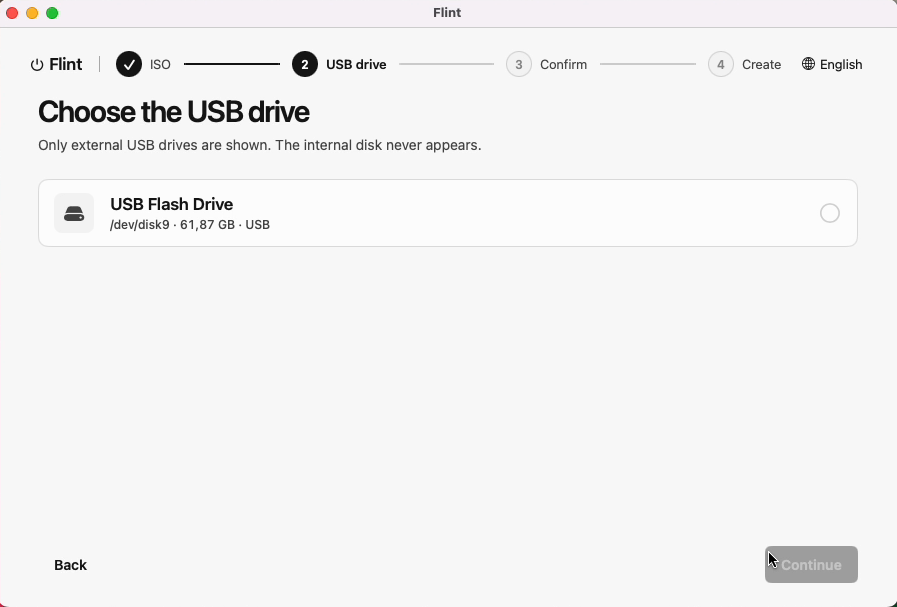
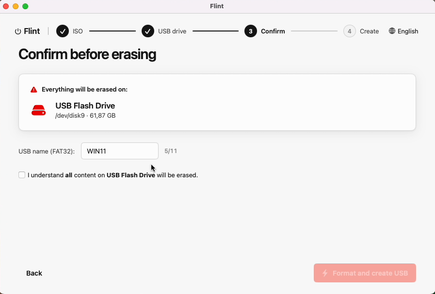
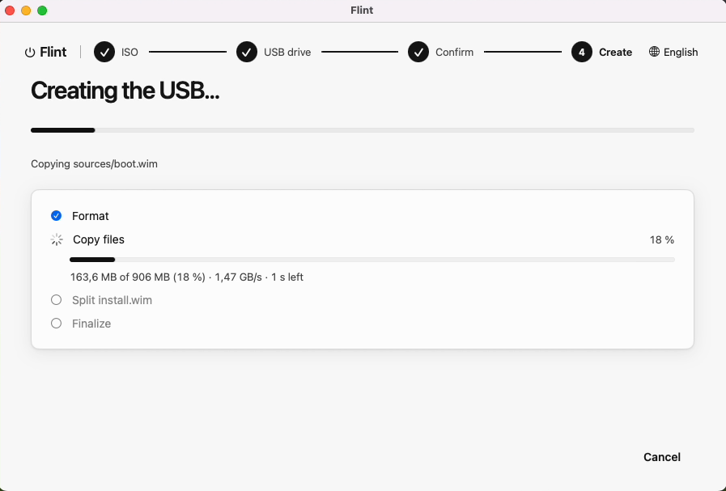

Flint turns a Windows or Linux ISO into a bootable USB on macOS — with a disk whitelist that makes it structurally impossible to erase the wrong drive.

I bought a new PC to build and needed a bootable Windows USB from a Mac. The choices were paying for one of the few macOS tools that do this, or trusting an unverified binary from a random site — for a tool that formats a disk and runs as root, neither sat right. There wasn't a free, open, and safe option, so I built the one I wanted. Writing it solo was realistic because most of the implementation happened alongside an AI coding agent — the kind of tool-assisted development that's only become practical the last couple of years.
How it works
Flint inspects the ISO's boot structure and picks the right strategy automatically — FAT32 copy for Windows, raw byte-for-byte write for Linux.

Drag it in or browse. Flint reads the boot structure before touching anything.

Only external, physical, removable disks are ever listed. The internal disk cannot appear here.

Exact disk name and size, plus a deliberate checkbox — no accidental clicks.

Real bytes, real percentages, real ETA — for every phase, including the raw write.
Features
MBR + El Torito signatures decide the strategy. Windows installers get a FAT32 copy with install.wim split to fit; Linux/isohybrid images get written raw, exactly as the upstream image expects.
The picker enumerates disks through DiskArbitration and hard-excludes anything that isn't external + physical + removable. Not a UI filter — a code-level whitelist.
Only the destructive step runs as root, in a minimal helper reached over XPC. No AuthorizationExecuteWithPrivileges, no giving the whole app admin rights.
Paste the official hash and Flint computes and compares it before writing a single byte.
The USB is checked against the ISO size up front, so a too-small stick can't fail mid-write and leave a half-written drive.
English and Spanish UI. Live bytes, percentage, MB/s and ETA for every phase — never just a spinner.
Safety model
Flint's most sensitive capability is erasing or raw-writing a disk from a privileged helper. Every safeguard below exists because of that one fact.
Code-level whitelist. Only external + physical + removable USB media is ever surfaced. The boot disk and disk images are excluded before the UI ever sees them.
Explicit destructive confirmation. Exact disk name and size shown, plus a deliberate "I understand" toggle — no default-confirmed dialogs.
Just-in-time revalidation. The disk identifier is re-checked immediately before the write — not just once, at selection time.
The helper trusts no one. The privileged process independently re-verifies the target is removable and external before acting — it never takes the app's word for it.
Fail-safe errors. Any failure aborts cleanly. No silent half-formatted disks, ever.
Everything else — mounting, copying, splitting, verifying, ejecting — runs unprivileged, as you.
Why not just…
Universal binary · Apple Silicon & Intel · Signed and notarized by Apple